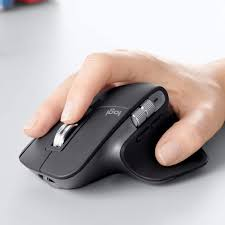
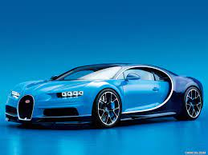
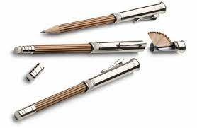
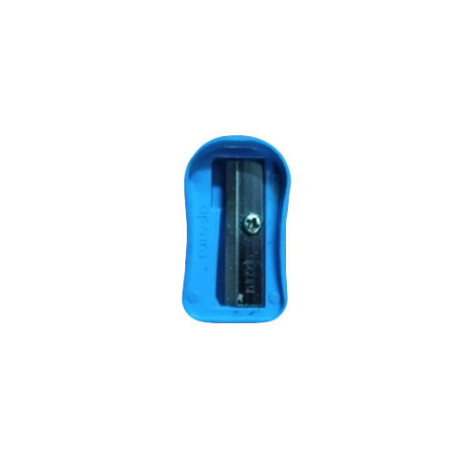

CASE STUDY BETWEEN GOOGLE LENS AND MOBILENET
Google Lens

Mobilenet
1.) Test Image-
Output on GOOGLE LENS - Logitech MX Master 3 (Wireless Mouse)
Output on MOBILENET MODEL - Mouse, Computer Mouse
Result-
2.) Test Image-
Output on GOOGLE LENS - Dell Latitude 5500 (Laptop)
Output on MOBILENET MODEL - Notebook, Notebook Computer
Result-
3.) Test Image-
Output on GOOGLE LENS - Bugatti Broward
Output on MOBILENET MODEL - Sports Car, Sport Car
Result-
4.) Test Image-
.jpg)
Output on GOOGLE LENS - Apple iPhone 12
Output on MOBILENET MODEL - Loudspeaker, Cell Phone
Result-
5.) Test Image-
Output on GOOGLE LENS - Graf von Faber-Castell Perfect Pencil
Output on MOBILENET MODEL - Ball Point Pen
Result-
6.) Test Image-
Output on GOOGLE LENS - Pomeranian (Dog)
Output on MOBILENET MODEL - Hamster
Result-
7.) Test Image-
.jpg)
Output on GOOGLE LENS - Ziggle Florescent Paper
Output on MOBILENET MODEL - Notecase
Result-
8.) Test Image-
.jpg)
Output on GOOGLE LENS - Inesis Scotish Umbrella
Output on MOBILENET MODEL - Umbrella
Result-
9.) Test Image-
.jpg)
Output on GOOGLE LENS - Fujifilm instax mini 11
Output on MOBILENET MODEL - Electric Switch
Result-
10.) Test Image-
Output on GOOGLE LENS - Blue Pencil Sharpener
Output on MOBILENET MODEL - Pencil Sharpener
Result-
I Have Tested 10 Images GOOGLE LENS Have Predicted 10 Of Them More Accurately And MOBILENET Was Less Accurately. So, According To My Case Study GOOGLE LENS Is More Accurate.